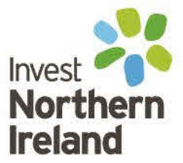
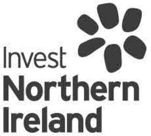

Trade Mark Journal No.2025/037 12 September 2025
UK00004256534 29 August 2025 (35,36,41)
Mark 1

Mark 2

- Class 35
- Business advisory and consultation services; development of concepts for business economy; business strategy development services; business consultancy and advisory services relating to product development; business information and inquiries; provision of business information via websites; providing commercial information from online databases; business information services provided online from a global computer network or the internet; dissemination of business information; trade information; advisory services relating to supply chain management, human resources, import and export requirements, business development; business analysis and information services, and market research; business feasibility studies; business evaluations; business assistance; business networking services; promotion of business opportunities; evaluation of business opportunities; business intermediary services relating to the matching of potential private investors with entrepreneurs needing funding; business development for start-up companies and small and medium sized enterprises (SMEs), being business incubation services; providing business management start-up support for other businesses; business consulting services; advisory and consultancy services relating to import-export agencies; business promotion; developing promotional campaigns for business; arranging and conducting of fairs and exhibitions for business purposes; arranging and conducting of exhibitions for trade purposes; arranging and conducting of trade fairs, commercial exhibitions and shows; trade promotional services; promotion and advertising services; business advice relating to growth financing.
- Class 36
- Funding services; provision of financial grants; funding of product development; provision of funding for research and development; providing of business grants; loan and credit, and lease-finance services; fund investment services; capital investment fund management; venture capital funding services to emerging and start-up companies; venture capital funding services for commercial entities, companies, and research institutions; advisory and consultancy services relating to the aforesaid services; advisory services relating to locating and financing property for business purposes.
- Class 41
- Education and instructions services in the field of business and entrepreneurship; business training services; training in business skills; organisation of conferences and exhibitions; arranging and conducting of commercial, trade and business conferences; arranging and conducting of workshops, seminars, lectures, colloquiums, business mentoring services; transfer of business knowledge and know-how [training]; online reference library services; providing online electronic publications, non downloadable, in the nature of news articles, guides, information sheets related living, working, studying, investing, visiting, conducting business in or trading with business located in Northern Ireland.
Invest Northern Ireland
Representative: Ansons